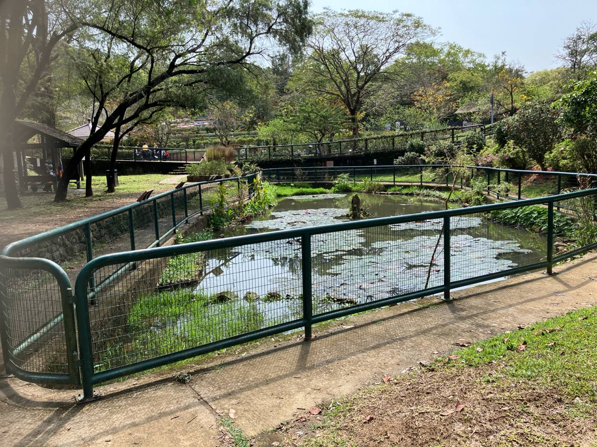
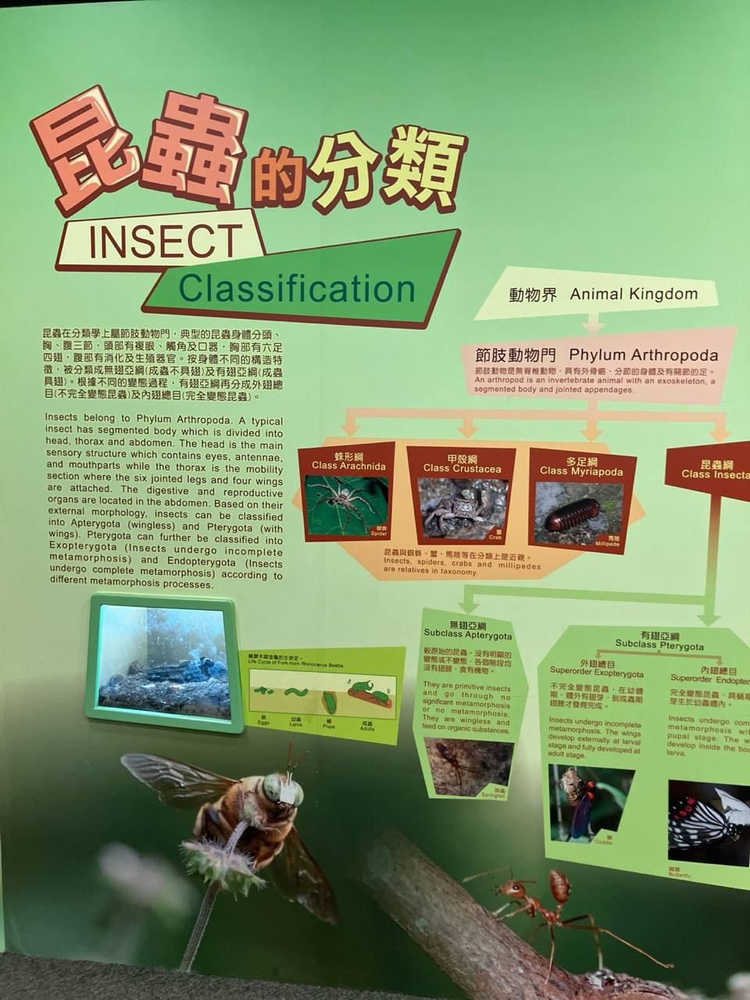

📋 基本資料
老師返工時間
8:15
學生返校時間
8:30
出發時間
9:00
預計到達
9:45
回程集合
11:30
開車時間
11:45
回校問卷
12:15
📍 目的地資料
地點
獅子會自然教育中心
地址
西貢巴士總站對面
開放時間
09:30 - 16:30
查詢電話
2792 2234

📦 事先預備
- 每組1條1米尺（數學科量度周界）
- 工作紙人手一份
- 分組名單
- 電話收集袋（回校後派發）
- 急救包
- 隊名牌/組別標記
📝 Briefing 安排
• 老師 Briefing：活動前1-2日
• 學生 Briefing：活動前1星期
📅 當日預備流程
| 時間 | 事項 |
|---|---|
| 8:15 | 老師返工 |
| 8:30 | 學生返校，到5/F課室集合 |
| 8:45 | 收電話（組長交電話俾負責老師） |
| 9:00 | 出發 |
| 9:45 | 到達，分班拍照 |
| 10:00 | 開始學科活動 |
| 11:30 | 集合，收隊 |
| 11:45 | 開車回校 |
| 12:15 | 派電話，做問卷 |
👥 班級資料
中一A
33人 | 6組 | 3位老師
中一B
32人 | 6組 | 3位老師
中一C
31人 | 6組 | 3位老師
中一D
32人 | 6組 | 3位老師
📋 分組規則
• 每組5-6人
• 每班3位老師，每位負責2組
• 組長交電話俾負責老師
• 其餘電話放校務處
📚 數學科活動
🐟 魚館 - 統計圖抄寫
地點：魚館（Fisheries Hall）
時間：最遲10:00開始
第一部份：抄寫統計圖
步驟1：選擇一個統計圖
步驟2：抄寫圖表標題
步驟3：抄寫橫軸標籤
步驟4：抄寫縱軸數值
步驟5：抄寫數據項目
第二部份：數據分析
找出最高值、最低值、總和，並描述數據特點
第三部份（延伸題）：
將統計圖改變為另一種形式展示
📝 建議答案
• 讓學生自行選擇圖表，唔好畀太多限制
• 注意橫軸/縱軸既單位
• 延伸題可以轉為柱狀圖、折線圖等


🪰 蜻蜓池 - 周界測量
地點：蜻蜓池（Dragonfly Pond）
題目：量度周界
使用1米尺量度蜻蜓池欄杆的總長度
準備物品：每位同學會預先收到1米尺
延伸題：估算方法
若果冇1米繩，可以用咩其他方法估算周界？
📝 建議答案
• 可以用腳步測量
• 可以用身體既手臂距離
• 可以用樹枝/樹葉既長度

🔬 科學科活動
🐛 昆蟲館 - 節肢動物觀察
地點：昆蟲館（Insectarium）
題目：繪畫檢索表
1. 咩係節肢動物？
2. 節肢動物有咩特性？
3. 畫出節肢動物的檢索表
4. 舉出每個類別的一個例子


📝 檢索表答案

🔙 後備方案
🏚️ 農館 - 柱體結構（數學）
若魚館/蜻蜓池未能進行


🏔️ 地質公園遊客中心（數學）
岩石結構觀察


🐚 貝殼館（數學）
雨天後備方案
⛩️ 起點涼亭 - 柱體填色（數學）

👨🏫 教師後備路線
✅ 可行：戶外美果園、中藥園
❌ 禁止：不可帶學生到聰明茶座
🏆 獎勵安排
完成四個任務可獲得飲品或小食作為獎品
* 級團支出